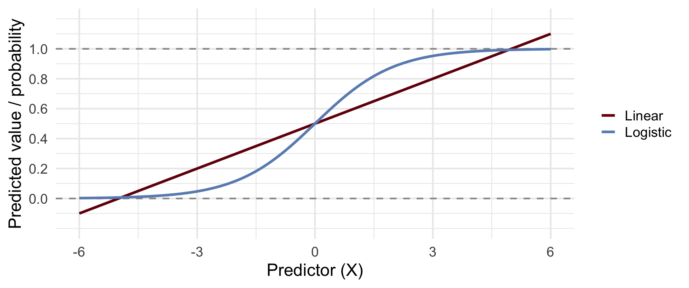
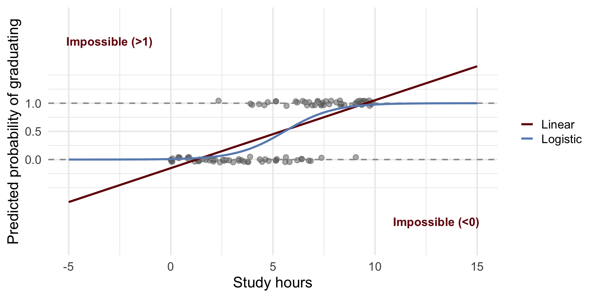
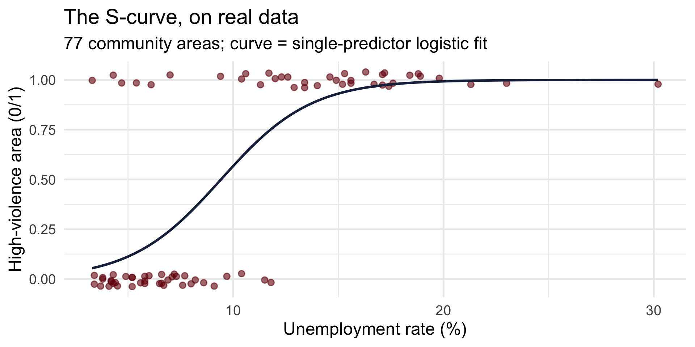

CRJU 705 · Session 12 · Fall 2026
Topic: logistic regression — modeling outcomes that are yes or no
lm() breaks when the outcome is 0/1glm(family = binomial), predicted probabilities, and the Bayesian version with brmsLearning goals: fit a logistic regression in both traditions; translate coefficients into odds ratios and predicted probabilities; say the results in plain language without confusing odds with probability.
Also today: the course pays off a promise it made in Session 1.
Linear regression predicts continuous outcomes (crime rates, response times). Logistic regression predicts binary outcomes — its currency is probability (0 to 1), expressed along the way as odds and log-odds.
Remember the opening case study? 40 bank robberies, five zones, one question: where will they hit next?
future_hit = 1 if the same zone was hit again within 10 days, 0 otherwiseToday is Session 12. Let’s reopen the machinery.
The exact model from Session 1 — one function, one family argument:
glm() = generalized linear model — regression’s family businessfamily = binomial is the switch that makes it logistic: predict a 0/1 outcomelm() formulas from Session 11| term | estimate | std.error | statistic | p.value | odds_ratio |
|---|---|---|---|---|---|
| scale(day_of_year) | 0.034 | 1.055 | 0.032 | 0.975 | 1.034 |
| prior_robberies_in_zone | -0.033 | 0.194 | -0.171 | 0.864 | 0.967 |
| zoneNorth | -17.528 | 3956.181 | -0.004 | 0.996 | 0.000 |
| zoneSouth | -17.563 | 2284.020 | -0.008 | 0.994 | 0.000 |
| zoneEast | -1.309 | 1.328 | -0.986 | 0.324 | 0.270 |
| zoneWest | 1.114 | 2.053 | 0.543 | 0.587 | 3.047 |
| zoneDowntown | -0.979 | 1.149 | -0.852 | 0.394 | 0.376 |
estimate column is in log-odds — that’s why it looked like gibberish in August; by the end of today it won’texp(estimate) turns each one into an odds ratio — West’s is by far the largest, which is why West had the highest predicted probability of a repeat hit. That’s why the cars went west.Linear regression is a straight road — it keeps going forever in both directions. Logistic regression is a curved hill that flattens at 0 and 1, because probabilities can’t go below 0 or above 1.

Predicting graduated the academy (yes/no) from study hours:

\[Y = b_0 + b_1 X_1 + b_2 X_2 + \varepsilon\]
The right-hand side is an unbounded straight line. Probability is trapped in [0, 1]. Something has to give.
Suppose 3 out of 4 parolees complete supervision: \(p = 0.75\).
\[\text{odds} = \frac{p}{1-p} = \frac{0.75}{0.25} = 3 \quad \text{("three to one")}\]
| Probability | Odds | Log-odds |
|---|---|---|
| 0.25 | 0.33 | −1.10 |
| 0.50 | 1.00 | 0.00 |
| 0.75 | 3.00 | +1.10 |
Step 2 — odds to log-odds: odds run 0 to ∞; log-odds run −∞ to +∞. That’s a scale a straight line can live on.
Just treat logit(\(p\)) — the log-odds — as your Y. Then…
\[\text{logit}(p) = \ln\!\left(\frac{p}{1-p}\right) = b_0 + b_1 X_1 + b_2 X_2\]
But the coefficients are log-odds!!! Nobody thinks in log-odds. So what do we do with them?
EXPONENTIATE!
exp(coefficient) = the odds ratio: multiply the odds of the outcome by this much for each one-unit increase in X, holding the other predictors constant.
| Log-odds coefficient (β) | Odds ratio (eβ) | Effect on odds | Intuitive interpretation |
|---|---|---|---|
| −2.0 | 0.14 | ↓ 86% | Odds are 86% lower than baseline |
| −1.0 | 0.37 | ↓ 63% | Odds are 63% lower than baseline |
| −0.5 | 0.61 | ↓ 39% | Odds are 39% lower than baseline |
| 0.0 | 1.00 | No change | Odds unchanged |
Negative log-odds → ratio below 1 → odds shrink. Zero → ratio of exactly 1 → nothing happens.
| Log-odds coefficient (β) | Odds ratio (eβ) | Effect on odds | Intuitive interpretation |
|---|---|---|---|
| 0.0 | 1.00 | No change | Odds unchanged |
| 0.3 | 1.35 | ↑ 35% | Odds are 35% higher than baseline |
| 0.7 | 2.01 | ↑ 101% | Odds are about twice as high |
| 1.0 | 2.72 | ↑ 172% | Odds are 2.7× higher |
| 2.0 | 7.39 | ↑ 639% | Odds are over seven times higher |
Positive log-odds → ratio above 1 → odds grow.
| Approach | What it estimates | Interpretation |
|---|---|---|
| Frequentist | Point estimates and confidence intervals | “If we repeated this 100 times, 95% of the intervals would contain the true β.” |
| Bayesian | Posterior distributions for each β | “Given our data and priors, there’s a 95% probability β lies in this range.” |
Exactly the split you know from Sessions 6 and 8 — nothing new, just a new model underneath it.
Toy data first — 32 cars from a 1974 Motor Trend issue, predicting manual transmission (1) vs. automatic (0) from horsepower and weight. Small enough to check every number; real CJ data in a few minutes.
Call:
glm(formula = am ~ hp + wt, family = binomial, data = cars_df)
Coefficients:
Estimate Std. Error z value Pr(>|z|)
(Intercept) 18.86630 7.44356 2.535 0.01126 *
hp 0.03626 0.01773 2.044 0.04091 *
wt -8.08348 3.06868 -2.634 0.00843 **
---
Signif. codes: 0 '***' 0.001 '**' 0.01 '*' 0.05 '.' 0.1 ' ' 1
(Dispersion parameter for binomial family taken to be 1)
Null deviance: 43.230 on 31 degrees of freedom
Residual deviance: 10.059 on 29 degrees of freedom
AIC: 16.059
Number of Fisher Scoring iterations: 8hp: log-odds 0.036 → odds ratio 1.037 — each additional horsepower multiplies the odds of a manual transmission by about 1.04 (+3.7%), holding weight constantwt: log-odds −8.08 → odds ratio 0.0003 — each additional 1,000 lbs cuts the odds by ~99.97%, holding horsepower constantOdds ratios describe effects. For an actual case, ask for the probability directly:
car hp wt p_manual
1 Cadillac Fleetwood 205 5.250 0.00000009787752
2 Honda Civic 52 1.615 0.99954591741880type = "response" returns probabilities: the light Civic is a near-certain manual (99.95%); the 5,250-lb Fleetwood, near-certain automatic. Report both: odds ratios for effects, predicted probabilities for cases.
predict()Ask the model for a prediction at every combination of horsepower and weight — a 40 × 40 grid, 1,600 predictions:
hp_seq <- seq(min(cars_df$hp), max(cars_df$hp), length.out = 40)
wt_seq <- seq(min(cars_df$wt), max(cars_df$wt), length.out = 40)
grid <- expand.grid(hp = hp_seq, wt = wt_seq)
grid$prob <- predict(model_freq, newdata = grid, type = "response")
# Reshape the 1,600 predictions into a grid; t() puts rows on the
# wt (y) axis and columns on the hp (x) axis, which is what plotly expects
z_matrix <- t(matrix(grid$prob, nrow = length(hp_seq), ncol = length(wt_seq)))The observed cars sit at height 0 (automatic) or 1 (manual); the surface passes between them.
data_points <- cars_df |>
mutate(prob = as.numeric(as.character(am))) # 0 = auto, 1 = manual
plot_ly(width = 950, height = 520) |>
add_markers(data = data_points,
x = ~hp, y = ~wt, z = ~prob,
color = ~am, colors = c("steelblue", "firebrick"),
symbol = I("circle"), size = I(50),
name = "Observed Data") |>
add_surface(x = hp_seq, y = wt_seq, z = z_matrix,
colorscale = list(c(0, 'lightblue'), c(1, 'firebrick')),
opacity = 0.6,
name = "Predicted Probability Surface") |>
layout(
title = "Logistic Regression: Curved Probability Surface",
scene = list(
xaxis = list(title = "Horsepower (hp)"),
yaxis = list(title = "Weight (1000 lbs)"),
zaxis = list(title = "Probability (Manual Transmission)")
)
)Rotate the live surface yourself on the previous slide — or rewatch the recorded walkthrough anytime:
family = bernoulli() is brms’s name for a 0/1 outcome — the switch that family = binomial flips in glm()chains = 2, iter = 2000, the compile pause, refresh = 0 to silence the logExponentiate the posterior summaries — dropping the intercept row, whose posterior is astronomically wide with only 32 cars:
Estimate Q2.5 Q97.5
hp 1.05233926370 1.0168277428244001 1.120707968
wt 0.00001855298 0.0000000008757284 0.006666486glm(): horsepower nudges the odds of a manual up; weight crushes themWhat separates Chicago’s high-violence community areas from the rest?
high_violence ships in the file (it’s in the codebook): is the area’s violent-crime rate above the citywide median? 38 above, 39 at or below.
The line that built it:
TRUE as 1 and FALSE as 0, so a logical column drops straight into glm()mutate() away tooOne predictor at a time before the model — unemployment against the outcome, with the fitted logistic curve:

Two predictors: unemployment and vacant housing — both plausible markers of concentrated disadvantage:
Call:
glm(formula = high_violence ~ unemployment_rate + pct_vacant,
family = binomial, data = areas)
Coefficients:
Estimate Std. Error z value Pr(>|z|)
(Intercept) -5.8208 1.3747 -4.234 0.0000229 ***
unemployment_rate 0.3699 0.1100 3.363 0.000771 ***
pct_vacant 0.2849 0.1428 1.995 0.046007 *
---
Signif. codes: 0 '***' 0.001 '**' 0.01 '*' 0.05 '.' 0.1 ' ' 1
(Dispersion parameter for binomial family taken to be 1)
Null deviance: 106.73 on 76 degrees of freedom
Residual deviance: 52.06 on 74 degrees of freedom
AIC: 58.06
Number of Fisher Scoring iterations: 6 OR 2.5 % 97.5 %
(Intercept) 0.002965276 0.0001115289 0.02846386
unemployment_rate 1.447590364 1.1934960639 1.84714872
pct_vacant 1.329619347 1.0371047252 1.83804694# A tibble: 2 × 4
community unemployment_rate pct_vacant p_high_violence
<chr> <dbl> <dbl> <dbl>
1 Forest Glen 4.2 2.6 0.0286
2 West Garfield Park 18.9 20 0.999 In plain language: for an area like Forest Glen (4.2% unemployment, 2.6% vacant), the model puts the probability of high-violence status at about 3%. For one like West Garfield Park (18.9%, 20.0%), it’s over 99%. That’s a sentence a chief — or a city council — can actually use.
Estimate Q2.5 Q97.5
Intercept 0.001792006 0.00007756542 0.02117534
unemployment_rate 1.492292997 1.21912215721 1.92093080
pct_vacant 1.366238869 1.03527533301 1.87703700Both traditions land in the same place: posterior odds ratios near the glm() estimates, credible intervals excluding 1. With 77 areas instead of 32 cars, the intervals are usably tight.
“Each one-point increase in the unemployment rate was associated with 45% higher odds of being a high-violence area (OR = 1.45, 95% CI [1.19, 1.85]), holding vacancy constant. Predicted probabilities ranged from about 3% for the least-disadvantaged areas to over 99% for the most.”
The effect (as an odds ratio), the uncertainty, and a probability a reader can feel — all three, every time.
“Given the data and priors, each one-point increase in unemployment multiplied the odds of high-violence status by about 1.5 (posterior mean OR 1.49, 95% credible interval [1.22, 1.92]).”
Same three ingredients — and this one gets to make a direct probability statement about the odds ratio itself.
A reentry study models re-arrest within 12 months and reports two log-odds coefficients: risk score (per point): 0.7 · completed programming: −0.5
exp() in R)exp(0.7) ≈ 2.0 — each risk point roughly doubles the odds. exp(−0.5) ≈ 0.61 — about 39% lower odds. Neither is a statement about probability.
exp() away from senseCRJU 705 · Session 12